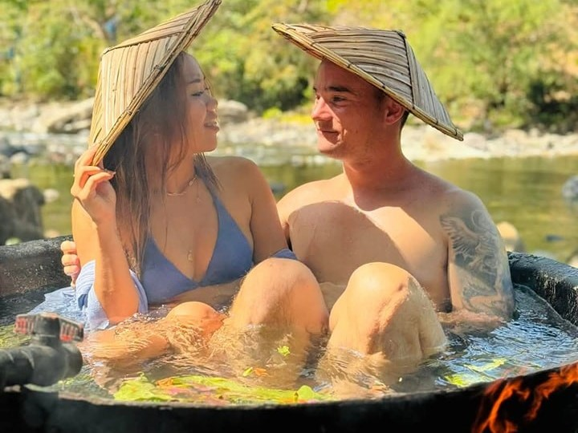
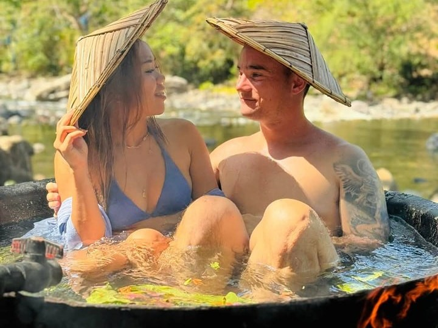
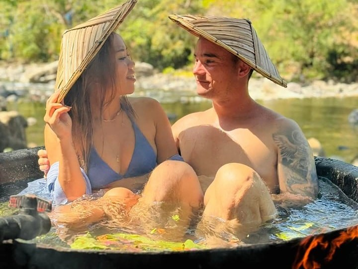

Experience the thrill of riding the rapids of the Tibiao River with river tubing. Guided by local experts, this adventure combines excitement and scenic views of lush surroundings. Perfect for thrill-seekers and nature lovers, it's a must-try activity during your visit.
Kawa Hot Bath
The kawa hot bath is a unique and relaxing experience at Calawag Mountain Resort. Guests soak in large woks filled with warm water infused with herbs, flowers, or other soothing ingredients like milk or coffee. Set amidst the serene mountains, the bath provides both relaxation and a cultural touch.

Lambaklad Fishing
Lambaklad fishing is a traditional fishing method showcased near Calawag Mountain Resort, offering visitors a glimpse into the local way of life. This activity involves a large stationary fish trap set in coastal waters, demonstrating eco-friendly and community-driven fishing practice. Guests can observe or participate, learning about the techniques used by local fishermen.
Kayak
Kayaking at Calawag Mountain Resort lets visitors paddle along the scenic Tibiao, River, surrounded by lush greenery and breathtaking mountain views. Whether you're exploring calm waters or navigating light currents, it's a peaceful yet invigorating way to connect with nature.
 
